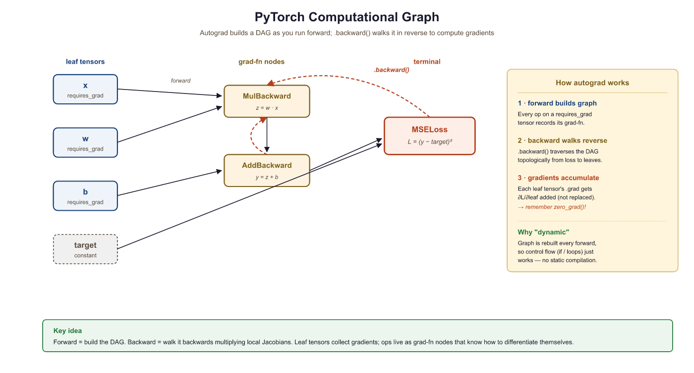
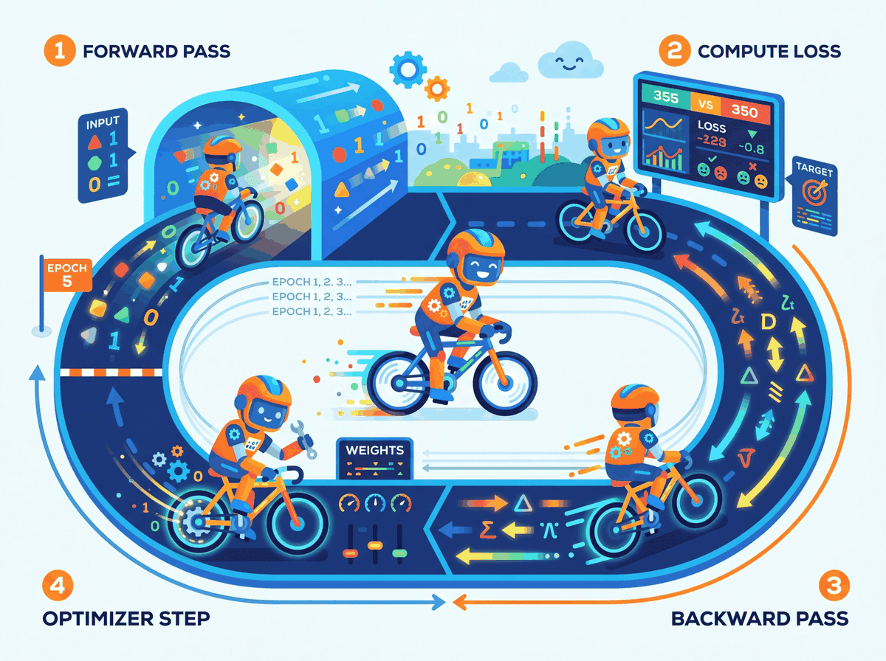
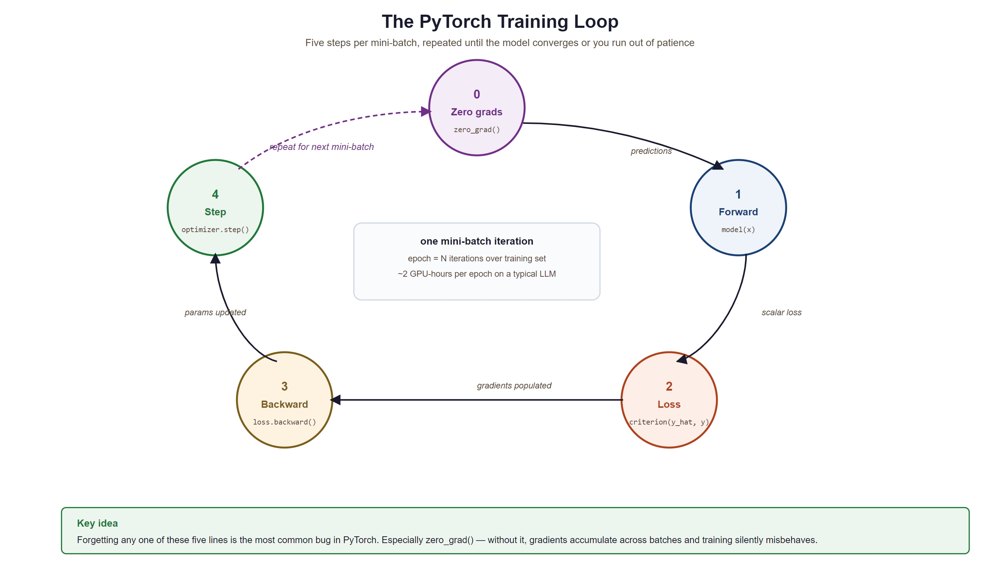

I used to write for loops. Then I discovered tensors, and now I judge everyone who still writes for loops.
Tensor, Tensor-Evangelizing AI Agent
PyTorch is the language we will use to build, train, and understand LLMs throughout this book. Every transformer layer, every attention head, and every training loop in the chapters ahead will be expressed in PyTorch. Investing time here pays compound interest in every module that follows.
Prerequisites
This hands-on tutorial assumes you have read Section 0.1: ML Basics (especially cross-entropy) and Section 0.2: Deep Learning Essentials (neural network layers and backpropagation). You should have Python installed along with PyTorch; a basic working knowledge of NumPy arrays will make tensors immediately familiar.
You could build a neural network using only NumPy, but it would be like building a house with hand tools when power tools are sitting on the shelf. PyTorch is a Python library for numerical computation on tensors with two superpowers: automatic differentiation and seamless GPU acceleration. If NumPy gives you a fast calculator, PyTorch gives you a fast calculator that can also compute its own derivatives and run on a graphics card. This section walks through every concept you need, starting from the lowest level (tensors) and building up to a complete training pipeline.
0.3.1 Tensors: The Fundamental Data Structure

A tensor is a multi-dimensional array. Scalars, vectors, matrices, and higher-dimensional arrays are all tensors. PyTorch tensors behave like NumPy arrays but carry extra metadata: a dtype, a device (CPU or GPU), and an optional link to a computational graph for gradient computation.
0.3.1.1 Creating Tensors
The following examples show how to create tensors from Python lists, NumPy arrays, and built-in factory functions.
# Create tensors from lists, factory functions, and NumPy arrays.
# Demonstrates dtype inference and zero-copy NumPy interop.
import torch
# From Python lists
a = torch.tensor([1.0, 2.0, 3.0])
print(a, a.dtype)
# Common factory functions
zeros = torch.zeros(2, 3) # 2x3 of zeros
ones = torch.ones(2, 3) # 2x3 of ones
rand = torch.randn(2, 3) # 2x3 from N(0,1)
seq = torch.arange(0, 10, 2) # [0, 2, 4, 6, 8]
# From NumPy (shares memory; no copy!)
import numpy as np
np_arr = np.array([1, 2, 3])
t = torch.from_numpy(np_arr)
print(t)# End-to-end training loop: forward pass, loss, backward, optimizer step.
# Uses CrossEntropyLoss and Adam on a FashionMNIST classifier.
import torch
import torch.nn as nn
import torch.optim as optim
from torch.utils.data import DataLoader
from torchvision import datasets, transforms
# --- Setup: dataset, model, device (defined inline so this runs as-is) ---
device = torch.device("cuda" if torch.cuda.is_available() else "cpu")
train_data = datasets.FashionMNIST(
root="./data", train=True, download=True, transform=transforms.ToTensor()
)
train_loader = DataLoader(train_data, batch_size=64, shuffle=True)
# Simple two-layer classifier: 784 -> 128 -> 10
model = nn.Sequential(
nn.Linear(28 * 28, 128),
nn.ReLU(),
nn.Linear(128, 10),
)
# --- Training loop ---
model = model.to(device)
criterion = nn.CrossEntropyLoss()
optimizer = optim.Adam(model.parameters(), lr=1e-3)
num_epochs = 3
for epoch in range(num_epochs):
model.train() # set training mode
running_loss = 0.0
for batch_idx, (images, labels) in enumerate(train_loader):
images, labels = images.to(device), labels.to(device)
# Flatten 28x28 images to vectors of length 784
images = images.view(images.size(0), -1)
# Step 0: Zero gradients from previous step
optimizer.zero_grad()
# Step 1: Forward pass
outputs = model(images)
# Step 2: Compute loss
loss = criterion(outputs, labels)
# Step 3: Backward pass (compute gradients)
loss.backward()
# Step 4: Update weights
optimizer.step()
running_loss += loss.item()
avg_loss = running_loss / len(train_loader)
print(f"Epoch [{epoch+1}/{num_epochs}], Loss: {avg_loss:.4f}")torch.from_numpy shares memory with the source array, while the training loop follows the four-step rhythm repeated in every chapter ahead.PyTorch defaults to float32 for floating-point tensors. This matters because GPUs are optimized for 32-bit arithmetic, and most deep learning happens at this precision. When you need to save memory (as we will with large language models), you can use float16 or bfloat16, a technique explored in depth in Chapter 9: Quantization and Inference Optimization.
Who: ML engineer at a fintech company building a credit scoring model in PyTorch
Situation: Loading financial features from a Pandas DataFrame into PyTorch tensors for a neural network that predicts default probability.
Problem: The model trained successfully but produced significantly worse AUC (0.71) than the same architecture in scikit-learn (0.79). Predictions clustered around 0.5, as if the model could not distinguish between borrowers.
Dilemma: The team spent two days reviewing the architecture, loss function, and hyperparameters. Nothing seemed wrong. They considered switching back to scikit-learn entirely.
Decision: A senior engineer added print(X_tensor.dtype) and discovered the tensors were int64 instead of float32. Pandas integer columns were converted without explicit dtype casting, and PyTorch silently performed integer arithmetic (truncating all fractional gradients to zero).
How: Changed torch.tensor(df.values) to torch.tensor(df.values, dtype=torch.float32). One line of code.
Result: AUC jumped to 0.80, matching the scikit-learn baseline. Total debugging time wasted: 16 engineer-hours.
Lesson: Always explicitly set dtype=torch.float32 when creating tensors from external data. PyTorch will not warn you about integer arithmetic in places where you expect floating-point.
0.3.1.2 Indexing, Slicing, and Reshaping
These operations let you select sub-regions of a tensor and change its dimensionality without copying data.
import torch
# Indexing, slicing, reshaping, and unsqueezing tensors.
# view() returns a zero-copy view; unsqueeze adds a size-1 dimension.
x = torch.arange(12).reshape(3, 4)
print("Original:\n", x)
print("Row 0: ", x[0]) # first row
print("Col 1: ", x[:, 1]) # second column
print("Subset: ", x[0:2, 1:3]) # rows 0-1, cols 1-2
# Reshape vs. View
flat = x.view(-1) # flatten (must be contiguous)
print("Flat: ", flat)
# Unsqueeze / Squeeze for adding/removing dimensions
row = torch.tensor([1, 2, 3])
print("Shape before unsqueeze:", row.shape)
print("Shape after unsqueeze(0):", row.unsqueeze(0).shape)0.3.1.3 Broadcasting
Broadcasting lets PyTorch perform element-wise operations on tensors of different shapes by automatically expanding dimensions. The rules mirror NumPy: dimensions are compared from right to left, and a dimension of size 1 is stretched to match the other tensor.
import torch
# Add a row vector to every row of a matrix
matrix = torch.ones(3, 3)
row_vec = torch.tensor([10, 20, 30])
result = matrix + row_vec # row_vec broadcasts across dim 0
print(result)(3,) vector across a shape-(3, 3) matrix. PyTorch automatically expands row_vec along dimension 0, adding [10, 20, 30] to every row without allocating a second matrix.Broadcasting can mask bugs. If you add tensors of shapes (3, 1) and (1, 4), PyTorch happily produces a (3, 4) result with no error. Always verify shapes with print(tensor.shape) when debugging unexpected results.
0.3.1.4 Device Management (CPU/GPU)
PyTorch tensors can live on CPU or GPU, and all operands in an operation must share the same device.
import torch
# Device management: detect GPU, create tensors on the target device,
# and move existing tensors with .to(device).
device = torch.device("cuda" if torch.cuda.is_available() else "cpu")
print("Using device:", device)
# Move tensors to the chosen device
x = torch.randn(3, 3, device=device)
# Or move an existing tensor
y = torch.randn(3, 3).to(device)
# Operations require BOTH tensors on the same device
z = x + y # works because both on 'device'device=device allocates it directly on the GPU, while .to(device) copies an existing CPU tensor. Both tensors must share the same device before any arithmetic.Trying cpu_tensor + gpu_tensor raises RuntimeError: Expected all tensors to be on the same device. The fix: move everything to the same device before operating. A good pattern is to define device once at the top of your script and use .to(device) everywhere.
Every ML engineer has at least one 3 AM debugging story where the bug was a missing .cuda() call. The "Expected all tensors to be on the same device" error message has probably caused more coffee consumption than any other line of code in history.
Creating and manipulating tensors is only the first step. The real power of PyTorch lies in its ability to automatically compute gradients through any sequence of tensor operations. This capability, called automatic differentiation, is the engine that drives all neural network training.
0.3.2 Autograd: Automatic Differentiation
Autograd is PyTorch's engine for computing gradients automatically, implementing the backpropagation algorithm covered in Section 0.2. When you set requires_grad=True on a tensor, PyTorch records every operation performed on it in a directed acyclic graph (DAG). Calling .backward() on the final scalar output traverses that graph in reverse to compute the gradient of the output with respect to every leaf tensor.
0.3.2.1 A Minimal Example
This snippet computes a simple polynomial, calls .backward(), and inspects the resulting gradient.
import torch
# Minimal autograd: compute y = x^2 + 2x + 1, then call backward()
# to obtain dy/dx automatically. At x=3 the gradient should be 8.
x = torch.tensor(3.0, requires_grad=True)
y = x**2 + 2*x + 1 # y = x^2 + 2x + 1
y.backward() # dy/dx = 2x + 2 = 8 at x=3
print(x.grad)0.3.2.2 The Computational Graph
Every operation creates a node in the graph. Intermediate tensors store a .grad_fn that records how they were created. The graph below shows what happens for a simple loss computation.

requires_grad=True. Yellow nodes record the operation for backward traversal.By default, PyTorch destroys the computational graph after .backward() completes. This is an intentional memory optimization: for a model with millions of parameters, keeping every intermediate graph in memory would be prohibitive. If you need to call .backward() multiple times on the same computation (rare in practice), pass retain_graph=True.
0.3.2.3 Gradient Accumulation
Gradients in PyTorch accumulate by default. If you call .backward() twice without zeroing gradients, the second set of gradients is added to the first. This is intentional (it enables gradient accumulation across mini-batches, a technique revisited in Section 16.3 on fine-tuning hyperparameters), but forgetting to zero gradients is the most common autograd bug.
import torch
# Gradient accumulation trap: calling backward() twice without
# zeroing adds gradients together. The fix is grad.zero_().
x = torch.tensor(2.0, requires_grad=True)
# First forward + backward
y = x * 3
y.backward()
print("After 1st backward:", x.grad) # 3.0
# Second forward + backward WITHOUT zeroing
y = x * 3
y.backward()
print("After 2nd backward:", x.grad) # 6.0 (accumulated!)
# The fix: always zero gradients before each backward pass
x.grad.zero_()
y = x * 3
y.backward()
print("After zeroing: ", x.grad) # 3.0.backward() calls without zeroing, x.grad doubles from 3.0 to 6.0. Calling x.grad.zero_() before the third pass restores the correct single-pass gradient. This is the most common autograd bug in custom training loops.During inference (or any time you do not need gradients), wrap your code in with torch.no_grad():. This disables graph construction, reduces memory usage, and speeds up computation. You will see this in every evaluation loop.
Automatic differentiation, the engine behind PyTorch's autograd, is a computational realization of the chain rule from calculus. But its significance extends far beyond convenience. In the 1960s, control theorist Robert Wengert and later Andreas Griewank recognized that any program composed of differentiable primitives could be mechanically differentiated by tracing its computation graph. This insight, known as the "differentiable programming" paradigm, blurs the boundary between writing software and defining mathematical models. Physicist and Fields medalist Richard Borcherds has noted that automatic differentiation is, in essence, a dual-number algebra applied at industrial scale. Every PyTorch computation graph is simultaneously a program and a mathematical expression, and .backward() exploits this duality to compute exact derivatives in time proportional to the forward pass. This is why gradient-based optimization scales to billions of parameters: the cost of computing the gradient is never more than a small constant multiple of the cost of computing the function itself.
0.3.3 Building Models with nn.Module
Raw tensors and autograd are powerful, but PyTorch provides torch.nn to organize parameters, layers, and forward computations into reusable chapters. Every model you build in this book, from simple classifiers to the full Transformer architecture in Chapter 3, will subclass nn.Module.
0.3.3.1 Your First nn.Module
The following class defines a two-layer network by subclassing nn.Module and implementing the forward method.
# Two-layer nn.Module: declare layers in __init__, wire them in forward.
# Calling model(x) runs forward plus any registered hooks.
import torch.nn as nn
class SimpleNet(nn.Module):
def __init__(self, input_dim, hidden_dim, output_dim):
super().__init__()
self.fc1 = nn.Linear(input_dim, hidden_dim)
self.relu = nn.ReLU()
self.fc2 = nn.Linear(hidden_dim, output_dim)
# Forward pass: define computation graph
def forward(self, x):
x = self.fc1(x)
x = self.relu(x)
x = self.fc2(x)
return x
model = SimpleNet(input_dim=784, hidden_dim=128, output_dim=10)
print(model)
# Count parameters
total_params = sum(p.numel() for p in model.parameters())
print(f"Total parameters: {total_params:,}")
The __init__ method declares layers; the forward method defines the computation. Never call model.forward(x) directly. Instead, call model(x), which runs forward along with any registered hooks.
With our model architecture defined, we need an efficient way to feed data into it. Training on one sample at a time is slow, and loading an entire dataset into memory may not be feasible. PyTorch solves this with a clean two-class abstraction for data handling.
0.3.4 Data Loading: Dataset and DataLoader
PyTorch decouples data storage from data loading through two abstractions. Dataset defines how to access individual samples. DataLoader wraps a dataset to provide batching, shuffling, and parallel loading.
# Load FashionMNIST with torchvision, apply normalization,
# and wrap it in a DataLoader for batched iteration.
from torch.utils.data import Dataset, DataLoader
import torchvision.transforms as transforms
from torchvision.datasets import FashionMNIST
# Define a transform pipeline
transform = transforms.Compose([
transforms.ToTensor(), # PIL image -> tensor, scales to [0,1]
transforms.Normalize((0.2860,), (0.3530,)) # FashionMNIST stats
])
# Download and load training data
train_dataset = FashionMNIST(
root="./data", train=True, download=True, transform=transform
)
# Create a DataLoader
train_loader = DataLoader(
train_dataset, batch_size=64, shuffle=True, num_workers=2
)
# Iterate to see the shape of a batch
images, labels = next(iter(train_loader))
print(f"Batch images shape: {images.shape}")
print(f"Batch labels shape: {labels.shape}")transforms.Compose pipeline that converts images to tensors and normalizes them. The DataLoader yields batches of shape (64, 1, 28, 28), handling shuffling and parallel loading via num_workers=2.0.3.4.1 Custom Datasets
When your data is not a standard benchmark, subclass Dataset and implement __len__ and __getitem__:
from torch.utils.data import Dataset
import torch
# Define MyDataset; implement __len__, __getitem__
# See inline comments for step-by-step details.
class MyDataset(Dataset):
def __init__(self, X, y):
self.X = torch.tensor(X, dtype=torch.float32)
self.y = torch.tensor(y, dtype=torch.long)
def __len__(self):
return len(self.X)
def __getitem__(self, idx):
return self.X[idx], self.y[idx]
0.3.5 The Training Loop

Training a neural network follows a rhythmic four-step pattern: forward pass, compute loss, backward pass, optimizer step. Every training loop you write, from a simple classifier to a billion-parameter LLM, follows this same skeleton.
Who: Research intern fine-tuning a GPT-2 model for customer support response generation
Situation: Wrote a custom training loop (instead of using the Hugging Face Trainer) to have more control over logging and gradient accumulation.
Problem: The model's loss decreased for the first 200 steps, then suddenly diverged to infinity. Restarting from the checkpoint produced the same explosion at roughly the same point.
Dilemma: The intern suspected a learning rate issue and tried reducing it from 5e-5 to 1e-6. The explosion was delayed but still occurred. They considered abandoning the custom loop for the Trainer API.
Decision: A mentor suggested printing gradient norms. They grew exponentially across steps because optimizer.zero_grad() was accidentally placed after optimizer.step() instead of before the forward pass, causing gradients to accumulate across batches.
How: Moved optimizer.zero_grad() to the first line inside the batch loop, immediately before outputs = model(input_ids).
Result: Loss decreased smoothly to 2.3 over 5,000 steps. The model generated coherent customer support responses. The fix was a one-line reorder.
Lesson: The training loop order (zero_grad, forward, loss, backward, step) is sacred. Moving any step out of sequence produces bugs that can be extremely hard to diagnose without gradient monitoring.

0.3.5.1 Complete Training Loop
Before we write our first training loop, let us understand the optimizer that drives learning. Momentum smooths out noisy gradients by maintaining an exponential moving average of past gradients, preventing the optimizer from oscillating on noisy surfaces. Adaptive learning rates give each parameter its own learning rate, scaled by the history of its gradients; parameters with consistently large gradients get smaller steps, and vice versa. Adam combines both ideas. AdamW improves on Adam by decoupling weight decay from the gradient update, which produces better generalization and is now the preferred optimizer for training large language models.
| Optimizer | Learning Rate | Momentum | Weight Decay | Best For |
|---|---|---|---|---|
| SGD | Single global rate | Optional (off by default) | Coupled with gradient | Convex problems, fine control |
| Adam | Per-parameter adaptive | Built in (first moment) | Coupled with gradient | Fast prototyping, general use |
| AdamW | Per-parameter adaptive | Built in (first moment) | Decoupled (proper regularization) | LLM pretraining, best generalization |
# A minimal PyTorch training step using assumed model + train_loader + device
# Demonstrates the inner four lines every supervised loop performs
import torch
optimizer = torch.optim.AdamW(model.parameters(), lr=3e-4)
loss_fn = torch.nn.CrossEntropyLoss()
for step, (x, y) in enumerate(train_loader):
x, y = x.to(device), y.to(device)
logits = model(x) # forward pass
loss = loss_fn(logits, y) # measure error
optimizer.zero_grad(set_to_none=True) # clear stale gradients
loss.backward() # backprop: compute new gradients
optimizer.step() # apply gradients with AdamW
if step % 100 == 0:
print(f"step {step:>4} loss {loss.item():.4f}")Always call model.train() before training and model.eval() before evaluation. These toggle behaviors of layers like Dropout and BatchNorm. Forgetting model.eval() during validation leads to noisy, unreliable metrics.
0.3.6 Saving and Loading Models
PyTorch stores learned parameters in a dictionary called the state_dict. Saving the state dict (rather than the full model object) is the recommended approach because it is architecture-independent and portable.
import torch
# Save model weights
torch.save(model.state_dict(), "model_weights.pth")
# Load into a fresh model instance
loaded_model = SimpleNet(input_dim=784, hidden_dim=128, output_dim=10)
loaded_model.load_state_dict(torch.load("model_weights.pth", weights_only=True))
loaded_model.eval()
# Save a full checkpoint (weights + optimizer + epoch) for resumable training
checkpoint = {
"epoch": epoch,
"model_state_dict": model.state_dict(),
"optimizer_state_dict": optimizer.state_dict(),
"loss": avg_loss,
}
torch.save(checkpoint, "checkpoint.pth")
# Resume from checkpoint
ckpt = torch.load("checkpoint.pth", weights_only=True)
model.load_state_dict(ckpt["model_state_dict"])
optimizer.load_state_dict(ckpt["optimizer_state_dict"])
start_epoch = ckpt["epoch"] + 1Always pass weights_only=True to torch.load() in modern PyTorch (1.13+). This prevents arbitrary code execution from untrusted checkpoint files. If you need to load optimizer state or other non-tensor data, use weights_only=False only with files you trust.
What's Next?
In the next part of this section, Section 0.3b: PyTorch Debugging, Lab & Modern Performance, we move from "the model runs" to "the model runs well": debugging tools (hooks, gradient inspection, profiler), common mistakes that silently produce wrong results, a hands-on FashionMNIST classifier lab, and the modern PyTorch features (torch.compile, mixed precision, distributed training) that make it fast.